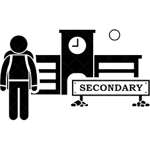

In the age of 7-12 years old in 2008-2013, I studied at SERI ABIM This school is a private school that focuses on islamic subjects yet still maintains the core subjects set by the Malaysian Ministry of Education. This school is located in Sungai Ramal Dalam, Bandar Baru Bangi, Selangor.

Secondary School
When I was 13-15 years old I went to SEMI ABIM ,and sadly SEMI ABIM is only available for students aged 13-15 only. Therefore, at the age of 16-17 I switched to SMK JR and successfully completed the school session and I had a best school moment ever.
University
In 2019 when I was 18 years old, Praise Be To Allah, the application for me to continue my diploma studies at UiTM Cawangan Negeri Sembilan, Kampus Rembau was approved without any hindrance.Hence, this is where all new things begin. I majored in Information Management which took 2 and a half years of study and now in January 2022 is my last semester. Fun fact, I had time to study physically at UiTM during the first semester and 3 weeks of the 2nd semester, however the rest of the semester I have to study at home because of Covid-19 pandemic. Whatever it is, it was a blessing and beautiful moment ever.